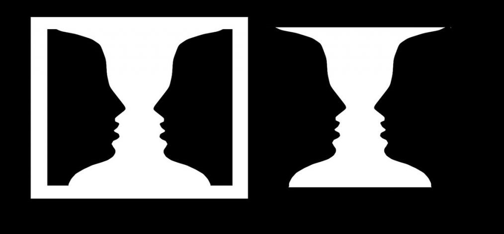
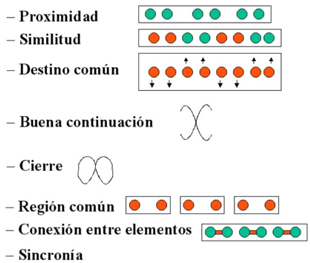
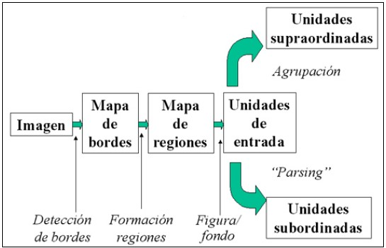
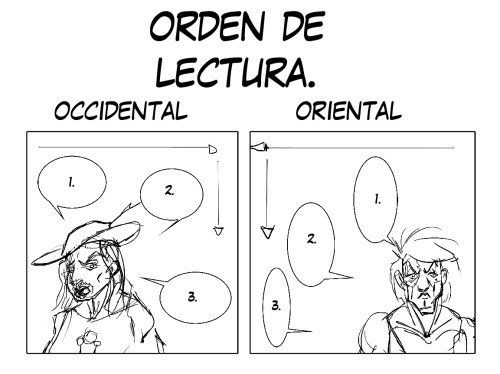

Dentro de la organización perceptual de objetos y escenas,
Primero se analiza la imagen obteniendo un mapa de bordes, en que se diferenciará áreas similares y más disimilares con respecto al resto, obteniendo un mapa de regiones,
Que tras la aplicación de los principios de agrupación y división
Tendremos como resultado la organización de objetos y escenas.
Con la organización perceptual y la tarea del usuario,
Se ve claramente marcada en como se organizan los elementos que se pueden facilitar o entorpecer el trabajo de un usuario.
Una idea principal para un buen diseño es que la organización perceptual de la información debe estar supeditada a cómo el usuario lleve a cabo la tarea sobre la misma.
La percepción de la profundidad,
viene dada por claves dadas por la imagen

o la propia estructura del sistema visual,

con ello a través del posicionamiento de los objetos y el sistema visual como puede ser la disparidad binocular,

que nos da la referencia de la lejanía de los objetos obtendremos la percepción de profundidad.
El reconocimiento del objeto,
que es uno de los procesos más complejos, ya que con frecuencia la imagen ni siquiera es completa por lo que el sistema perceptivo utiliza dos vías para acceder a las unidades de reconocimiento (representación centrada en la persona y centrada en el objeto).
Dentro de la percepción la atención juega un papel muy importante ya que como el filtro que permite restringir qué información va a ser analizada en cada momento, evitando así una posible saturación del sistema cognitivo. La atención puede optar por dos formas dependiendo de la cantidad y tipo de estimulación y los objetivos de la persona. Se entiende como atención selectiva, un usuario puede focalizar toda su atención en un elemento obviando la información que provenga de otros canales perceptivos. En segundo lugar, se habla de atención dividida para hacer referencia a la posibilidad de prestar atención por dos canales perceptivos o a dos elementos dentro del mismo simultáneamente.
Con respecto al acceso del conocimiento, a través de las imágenes se crea un acceso directo por el cual no es necesario acceder al código fonológico para obtener información semántixa del objeto representado.
Y por último existe la función de conocimiento de los objetos, los affordances, son las funciones de un objeto que el observador percibe directamente a partir de su imagen, para su máxima eficacia deben de ser funcionales, coherentes y relativas a la vista del observador.
I have odd cosmic thoughts every day
For me, the most fascinating interface is Twitter. I have odd cosmic thoughts every day and I realized I could hold them to myself or share them with people who might be interested.
Venus has a runaway greenhouse effect. I kind of want to know what happened there because we're twirling knobs here on Earth without knowing the consequences of it. Mars once had running water. It's bone dry today. Something bad happened there as well.